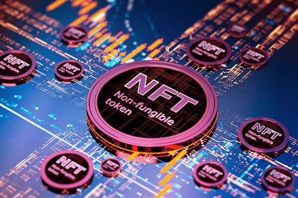

O que é NFT?
NFT é a sigla de Non-Fungible Token (em português token não-fungível), e trata-se de um código gerado em computador que tem como objetivo autenticar um arquivo, garantindo sua unicidade. Para entender melhor esse conceito, é importante ter em mente o que é um ativo fungível.
Ativos fungíveis são unidades que podem ser trocadas sem alteração de valor, por exemplo, uma nota de cem reais, que pode ser trocada por dez notas de dez reais.
Um ativo não-fungível, por sua vez, tem propriedades específicas e únicas, nunca um é igual a outro. Um quadro tem apenas uma versão original, ainda que possam haver cópias e reproduções (ou mesmo falsificações).
Portanto, o NFT é um ativo não-fungível, um token com uma chave absolutamente única, vendido com o arquivo, garantindo sua originalidade. Lembra do comprador do Nyan Cat? Então, essa pessoa recebeu o arquivo original do gatinho, com o NFT, o código garantindo sua unicidade.
